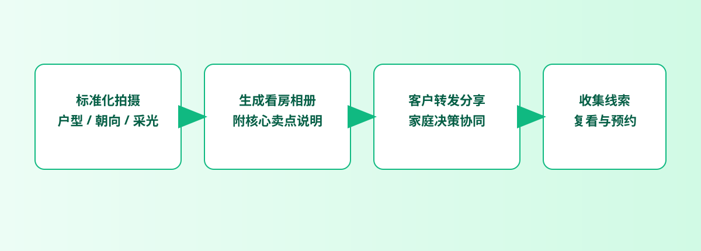

看房路径
客户最怕的不是图少，而是入口太碎
一套房源如果拆成很多零散消息，客户很难形成完整印象。先把房源图、细节图和补充图整理成一个入口，再去发链接或二维码，阅读路径会顺很多。

房产沟通里最常见的问题不是“没有图”，而是图太散。客户想了解一个房源，却被分散的照片、重复解释和不同入口打断。更专业的做法，是把看房资料收成一个轻量入口，再根据客户接触方式决定发链接还是二维码。
中介、置业顾问、楼盘营销人员，以及需要把房源图片发给客户的人。
精选房源图、样板间预览、活动现场扫码看房、阶段性项目资料分发。
这不是完整房产 CRM 或楼盘系统，更像是一个轻量的图片分享入口。
对房产场景来说，真正重要的不是“能放多少功能”，而是客户拿到资料以后能不能更快理解房源，同时你自己还能不能把传播边界握住。
提示：下面的流程图和配图都可以点击放大，细节会更清楚。
一套房源如果拆成很多零散消息，客户很难形成完整印象。先把房源图、细节图和补充图整理成一个入口，再去发链接或二维码，阅读路径会顺很多。


房源会变、项目会变、带看阶段也会变，所以房产图片分享尤其需要有效期和后续关闭能力。发出去不等于永远开放，这一点在看房场景里很实际。
这类展示图最大的价值，是让你一眼理解“统一入口”是什么意思。客户点进去就能连续看，不需要在多个消息里反复上滑找图。


如果客户在线下看房或者现场咨询，二维码会比临时找链接快很多。它把线下触达和线上资料连接起来，让沟通更完整。
在这里，同一套房源图会同时得到链接和二维码。你后面发给客户、放到资料页或者现场物料里，都是从这个入口继续往外延伸。


当客户沟通结束、项目切换或房源下线时，你不一定希望旧入口一直流传。这个时候，打开次数、有效期和失效设置会比事后追链接更省心。
房产图片分享真正该优化的，不是再多发几张图，而是让客户更快进入状态，也让你自己少做重复解释。